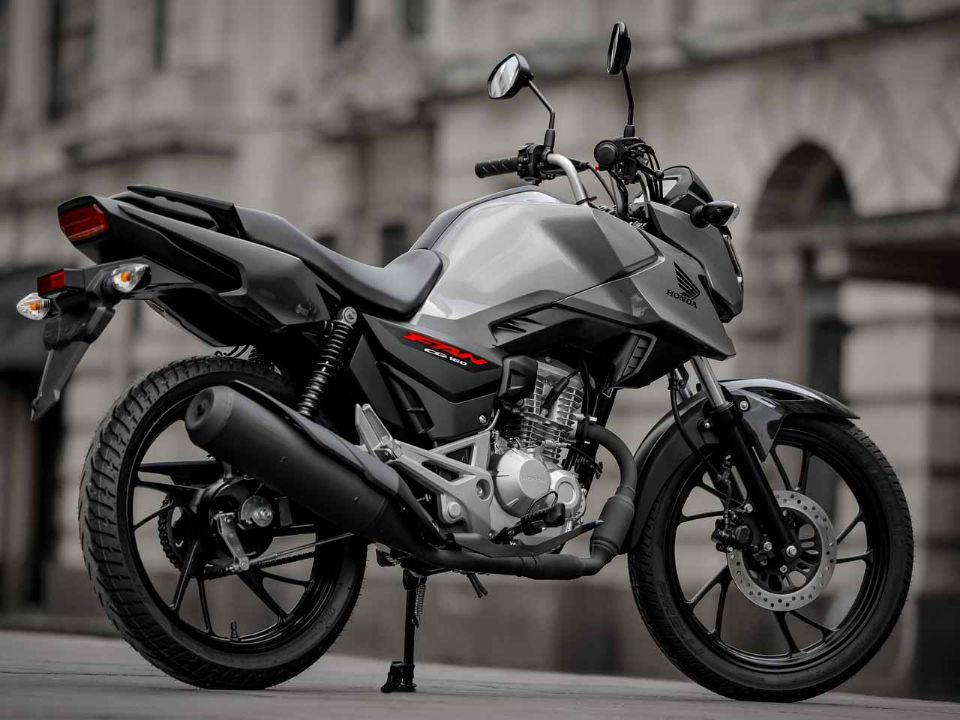

Quanto custa manter uma moto 150cc em 2026?
O custo de manter uma moto no Brasil em 2026 continua sendo um dos grandes atrativos para quem busca economia. Modelos populares da Honda e Yamaha apresentam consumo médio de até 40 km/l.

Honda CG 160 2026 oficialmente lançada; preço e cores
O custo de manter uma moto no Brasil em 2026 continua sendo um dos grandes atrativos para quem busca economia. Modelos populares da Honda e Yamaha apresentam consumo médio de até 40 km/l.
Entrar no mundo das motos pode ser desafiador, mas escolher o modelo certo faz toda a diferença. Em 2026, opções como a Honda CG 160 e a Yamaha Factor 150 continuam sendo as favoritas para quem está começando.
Começar a pilotar exige atenção e responsabilidade. Muitos iniciantes acabam cometendo erros que podem ser evitados com informação.